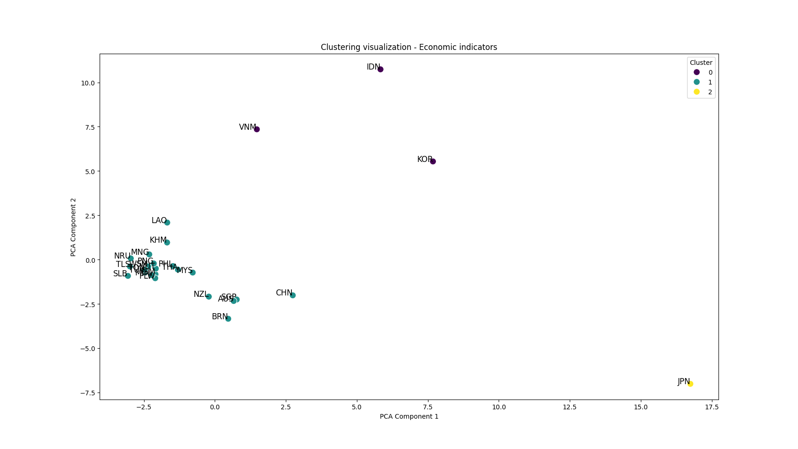

National economic indicators cluster visualization

The similarity and change of economic indicators in Asia-Pacific countries during 1995-2015 were analyzed by clustering method
Share of Countries' Trade
2000
Scoring of economic indicators
A radar map was constructed based on a scoring system to comprehensively compare the economic development and health of Asia-Pacific countries. The score was 0-100, the higher the score, the better the performance of the country
Map visualization
View the economic data of different countries in different colors of the map, including GDP, GDP per capita, GDP growth rate, domestic savings ratio and gross National income